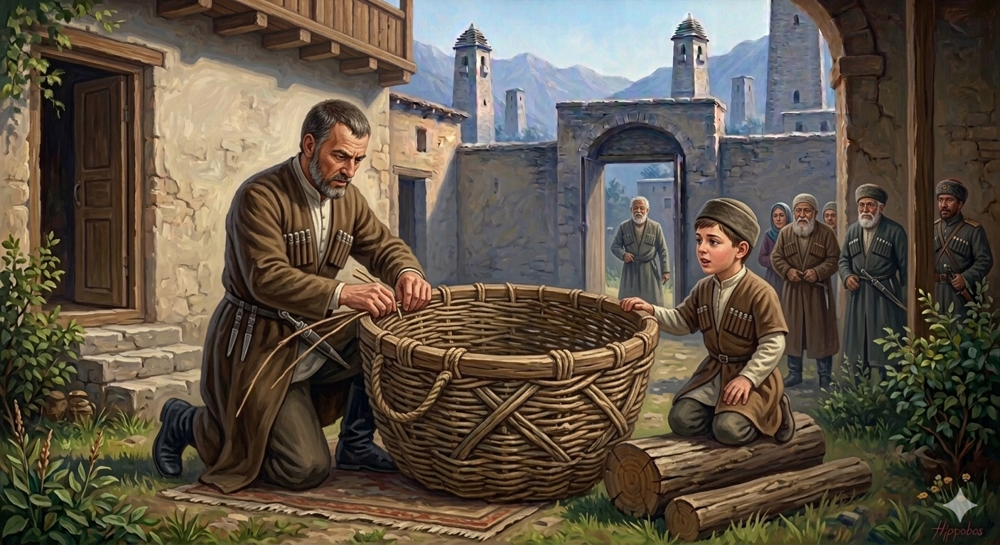

И.А. Дахкильгов. Хьехаме дувцарш - поучительные рассказы-притчи.
И.А. Дахкильгов. Хьехаме дувцарш - поучительные рассказы-притчи. Из ингушского фольклора.

Тускар чӀоагӀагӀа делахь
Хьалха цхьа Ӏаьдал хиннад: геттар къабенна, дӀа-хьа лела гӀоарал дайна биса бола боккхий нах, тускара чу а бехкаш, цхьан гаьннача лоамах ахка бохийташ. Иштта цхьан къонахчун да хиннав кхы хӀаманна пайданна воацача ваьнна. Саг чухошшал дола доккха тускар дувца Ӏохайнав из. Цунна юхе-да ловзаш лелаш хиннав цун зӀамига кӀаьнк. Хаьттад цо: - Фу деш ва хьо? - Вай воккха дади тишвеннав, - аьннад, - цунна ду аз ер тускар. Из санна къабенна болаш бола нах укх моча тускара чу а хувшабеш, лоам дӀа а кхухьаш, ахка ухийташ Ӏаьдал да вай. - Дади, - аьннад кӀаьнко, - из тускар чӀоагӀагӀа делахь, хьо къавелча, аз цу чу а хоаваь, ахка вохийтаргва хьо. Цу ханара денна, йоах наха, дӀалела гӀоарал доаца боккхий нах тускарашца дӀай-хьай лелабеш хиннаб, ахка кхы ухийташ хиннабац.
РУССКИЙ
Сделай корзину покрепче
Некогда был обычай: глубоких стариков, неспособных передвигаться, сажали в корзину и скатывали в пропасть в определенном месте. Так, отец одного мужчины очень одряхлел. Начал мужчина для него плести корзину. Его малолетний сынок игрался рядом. Он спросил отца: - Дади (отец), для чего ты плетешь корзину? - Твой дедушка совсем состарился. Делаю такую корзину, чтобы посадить его в нее и проводить в последний путь. - Дади, - попросил мальчик, - плети ее попрочнее. Когда ты состаришься, я тебя тоже посажу в эту корзину и отправлю в пропасть. С тех пор люди перестали избавляться от дряхлых старых людей. Поскольку у них не было сил передвигаться, их сажали в большие корзины и несли, куда им понадобиться.
ENGLISH
Make the basket sturdy
There used to be a custom whereby very old people who could no longer move were placed in a basket and rolled down a cliff at a designated spot. One man's father had grown very frail. The man began to weave a basket for him. His young son was playing nearby. He asked his father, 'Daddy, why are you weaving a basket?' 'Your grandfather has grown very old. I'm making this basket to put him in and send him on his final journey." "Daddy," the boy pleaded, "make it stronger." "When you grow old, I'll put you in it too and send you over the cliff." From then on, people stopped disposing of frail elderly people. As they lacked the strength to move around, they were placed in large baskets and carried wherever they needed to go.
НОХЧИЙН
Тускар чӀогӀах делахь
Хьалха цхьа Ӏедал хилла: гуттар къанбелла, дӀа-схьа лела гӀора дайна бисна болу баккхий нах, тускаран чу а бохкуш, цхьана геннарчу ломах ахке бохуьйтуш. Иштта цхьана къонахчун да хилла кхин хӀуманна пайденна воцачу ваьлла. Стаг чухаъал долу доккха тускар дуца охьахиъна иза. Цунна йуххехь ловзуш лелаш хилла цуьнан жима кӀант. Хаьттина цо: - ХӀун деш ву хьо? - Вай воккха дади тишвелла, - аьлла, - цунна до ас хӀара тускар. И санна къанбелла болуш болу нах хӀара санна тускаран чу а ховша беш, ломе дӀа а кхоьхьуш, ахках оьхуьйтуш Ӏедал ду вай. - Дади, - аьлла кӀанта, - иза тускар чӀогӀах делахь, хьо къанвелча, ас цу чу а хаийна, ахках вохуьйтур ву хьо. Цу хенара дуьйна, бох наха, дӀалела гӀора доцу баккхий нах тускаршца дӀай-схьай лела беш хилла, ахках кхин оьхуьйтуш хилла бац.
ПОГОВОРКИ